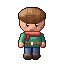

Putting a sprite on a page
<pixel-sprite> is one dependency-free module. Point it at a bundle, give it a size,
and it picks the right resolution, keeps pixels crisp on every screen, and plays.
The basics
anim picks the animation (the first one by default), size is the height in CSS pixels, and
alt is read by screen readers (alt="" makes it decorative). The box is reserved before the
bundle loads, so the page does not jump.
One bundle, every size
Each bundle holds 16, 32 and 64 px renders drawn at different levels of detail. The element picks the one that fits,
like srcset, and scales it by whole device pixels, so a sprite pixel is always an exact block of screen pixels.
Hover and click
Hover animations are for mouse and pen. On a phone, a tap plays the click animation, or the hover animation once. If the bundle carries a state machine, its own interactions take over.
Playing from script
Inline in text
Sprites sit in a line of text
Loading, errors and fallbacks
Children of the element show until the sprite is ready, and again if it fails: a poster image works even without JavaScript.
The status attribute (loading, ready, error) is there for CSS.

Styling
Size sprites with size, not CSS width and height: the element sizes itself so pixels stay even.